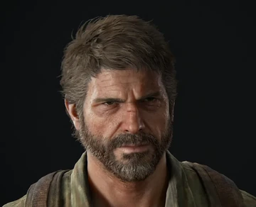
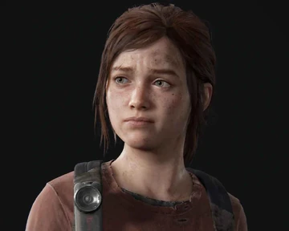
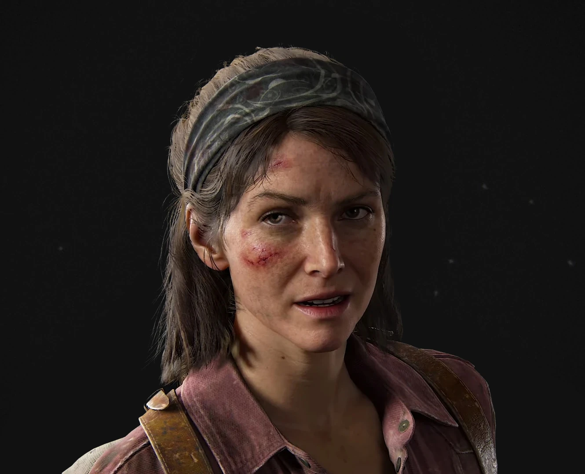
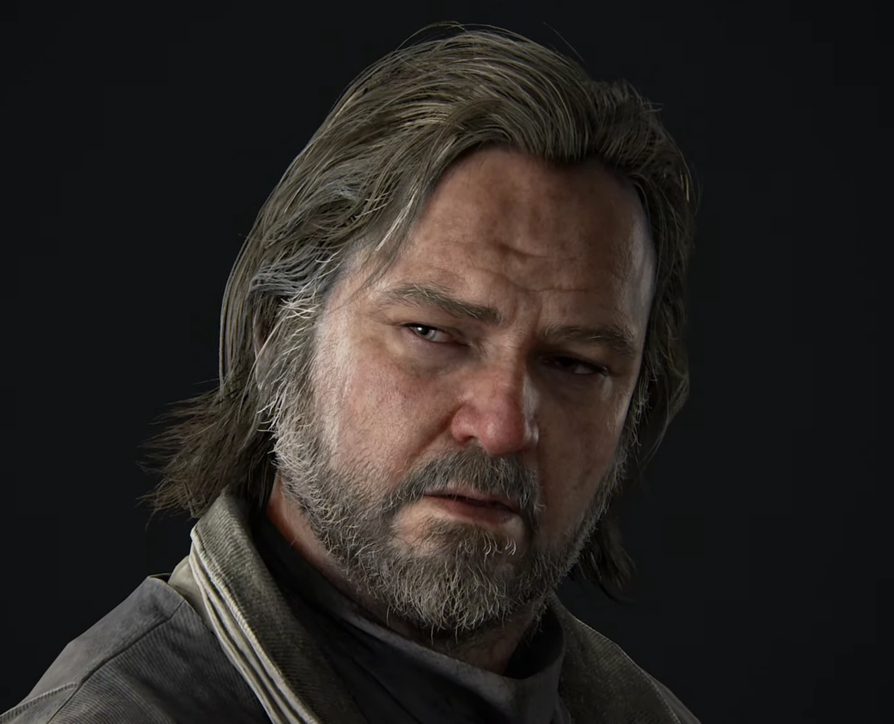
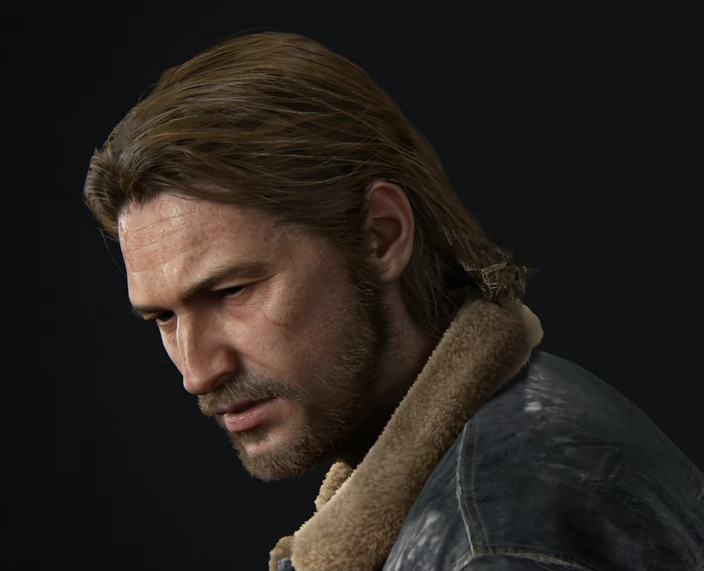
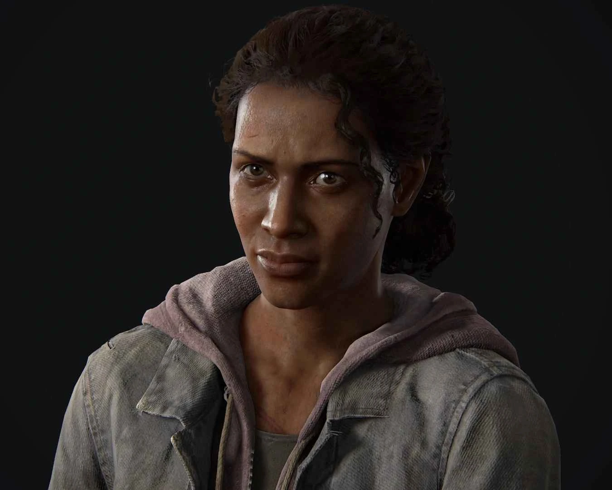
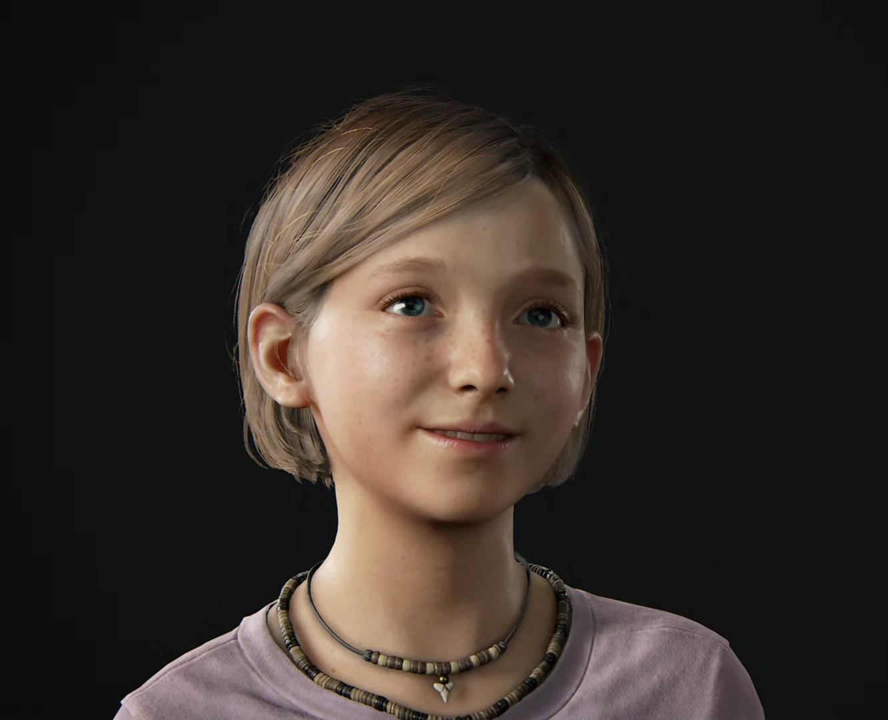

Joel es un operador despiadado en el mercado negro subterráneo. Independiente e ingenioso, se endureció tras una trágica pérdida. A lo largo de su viaje, descubre la fuerza para convertirse en una figura paterna para Ellie y luchar por un mejor futuro para ella y para él.
Cuando conocemos a Ellie por primera vez, es una chica de 14 años que no conoció el mundo "normal" anterior a 2013. Por lo tanto, Joel no se convierte solo en su transportador, sino también en un guía para el mundo. Es precoz, ingeniosa y capaz. Ya sea con sus juegos de palabras o superando crisis, su astucia e ingenio demuestran ser invaluables.
Fuerte, capaz y posiblemente más despiadada que su socio de contrabando, Joel, Tess superó las dificultades del mundo brutal que la rodea para convertirse en una hábil estratega y negociadora. Su liderazgo y destreza física la convirtieron en una figura respetada en la zona de cuarentena de Boston. A pesar de adaptarse a la mentalidad de "matar o morir" de una sobreviviente curtida, sigue siendo leal y valiente, y finalmente demuestra su altruismo al ayudar en el viaje de Joel y Ellie.
Es el último sobreviviente de su pueblo, donde se quedó mientras los demás residentes lo evacuaban o sucumbían ante la infección. Su pragmatismo le dio las facultades necesarias para fortificar su lugar contra amenazas externas, ya sean humanos o infectados. Su aislamiento tuvo como resultado soledad y paranoia, aunque él será la última persona en admitirlo.
Aunque comparte la aspereza y la determinación de su hermano Joel, Tommy se distingue por una personalidad impulsiva, compasiva y optimista. Después de un tiempo luchando junto a las Luciérnagas, conoce a su futura esposa, Maria, y su comunidad en Jackson, Wyoming. Con este nuevo sentido para sus valores, busca crear una vida rica y significativa a pesar de unas circunstancias desalentadoras.
Es la líder de los "Luciérnagas y acaba siendo asesinada por Joel al final del juego.
Era la hija de 12 años de Joel antes del brote de infección cerebral por Cordyceps y es asesinada por un militar en frente de su padre Joel.
